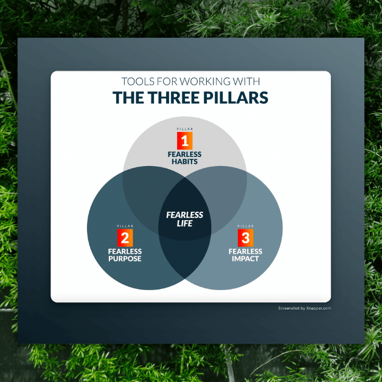

You start the day with the feeling: there's a bunch of things I need to do right away.
Then the rest of the day, you're driven by the feeling that there's so much to do, and you're behind on it all.
You finish the day with the same feeling, and it carries over until tomorrow.
The constant feeling of being behind — it's something so many people can relate to. So what can we do about it?
What we usually do is either be driven, driven, driven by this fear … or we conclude that we need to abandon everything and start with a fresh slate. With this fear, it can feel like these are the only two options.
But there are actually many more options. For example, you could turn it into a game, and play. You could think of every activity you do as a gift. You could create art out of all the things on your plate. You could create a vision that's so much bigger than your tasks and their deadlines.
You could find transcendence.
Let's explore how to transform the feeling that you're behind on everything.
Examine the Belief
Before we move beyond the current fear, it’s important to slow down, and examine what’s going on. Otherwise we’re just trying to rush past something we think sucks, and we miss the spiritual moment available to us here.
The spiritual moment is first to slow down and feel what it feels like. What is present for you, as direct experience in your body, when you feel behind on everything? How does it feel? Give yourself a minute to just be with that, giving it some attention.
Next, you might notice what belief you have that makes you feel behind. Where does the idea that you’re behind come from? Sometimes it’s external: other people set deadlines for you and you haven’t met them. But more often it’s internal: we have an idea that we should have an empty inbox and a task list that’s all done. That’s pretty much never going to be true, so this expectation will always cause stress.
Is this a helpful expectation, that you should be done with everything and have an empty inbox?
Find a New View That Transcends
If you’re ready to move beyond, then you might think of a view of the situation that’s much bigger than this game you’re playing to have a finished task list and empty inbox. That’s a small game.
What’s bigger? What about playing for meaning? What about serving others? What about having an experience of awe and joy?
So maybe you decide that your mission today is to create as much meaning as you can find. What can you do right now that’s meaningful? What would light you up, or move your soul?
Choose something bigger, and the game of being finished with everything starts to fall away.
Practicing with the Transcendent View
That’s all fine in theory, but in practice we’ll constantly get pulled back into the old view. Start to notice when you feel behind. Slow down and be with that feeling again, like being with an old friend.
Then practice your bigger view. What can you do right now from that bigger view? Try to stay connected to it as you do the next thing. Remember that you’re playing that bigger game, and feel the meaning behind it, or the joy and awe.
One moment at a time, transcend the smaller view into something more profound.
See all posts >>

// Free Training
from Zen Habit's Founder, Leo Babauta
The 3 Pillars of Fearless Living
Inside you'll find...
💥 A simple habit assessment + three steps for making change in your life.
💥 The Fearless Action Method for finding your purpose.
💥 How to train in the uncertainty of hard tasks.
Join 2,000,000+ breath-taking readers
Zen Habits has twice been named one of the Top 25 blogs by Time Magazine.